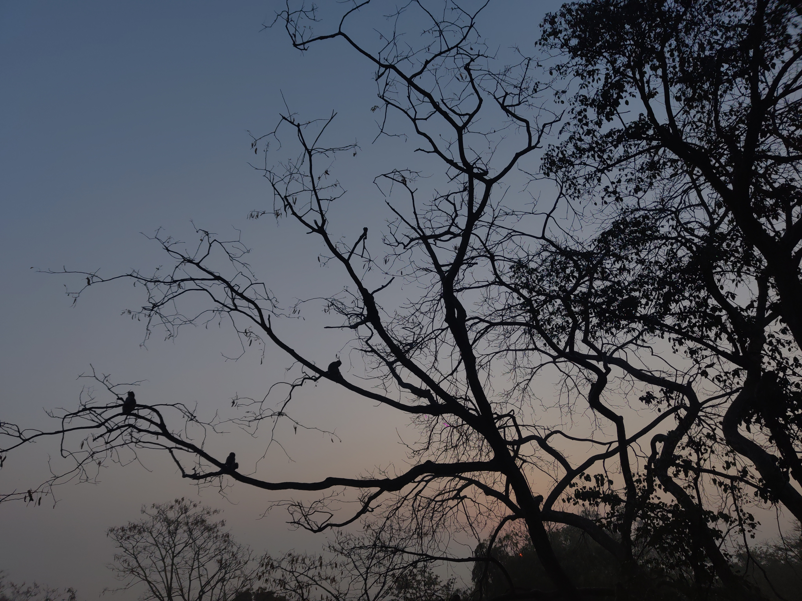
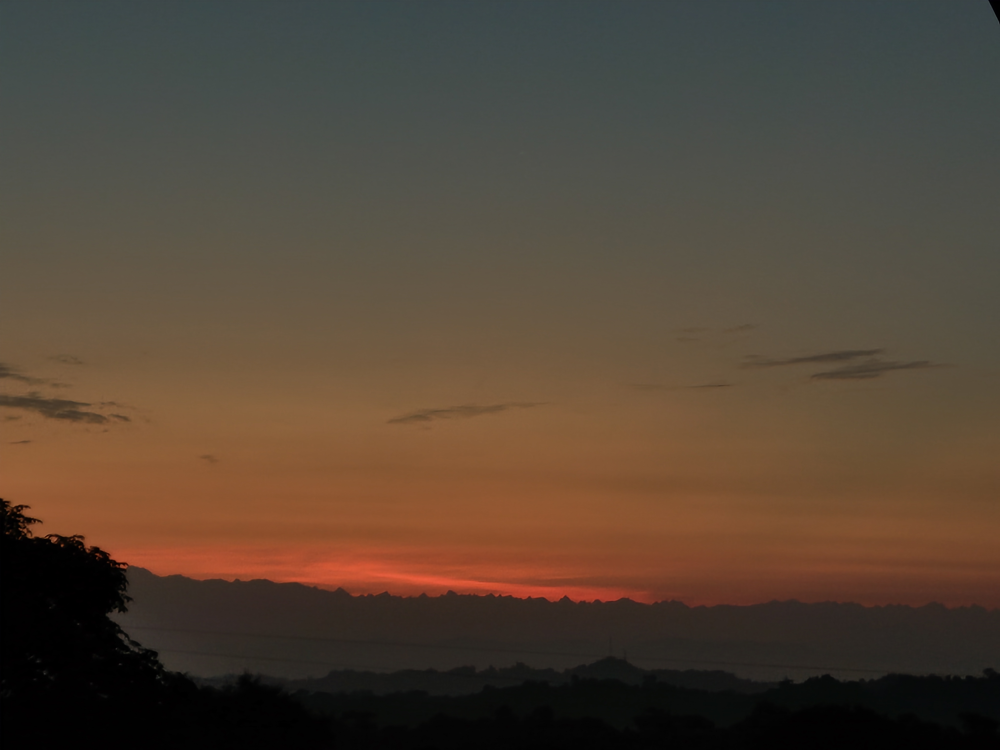
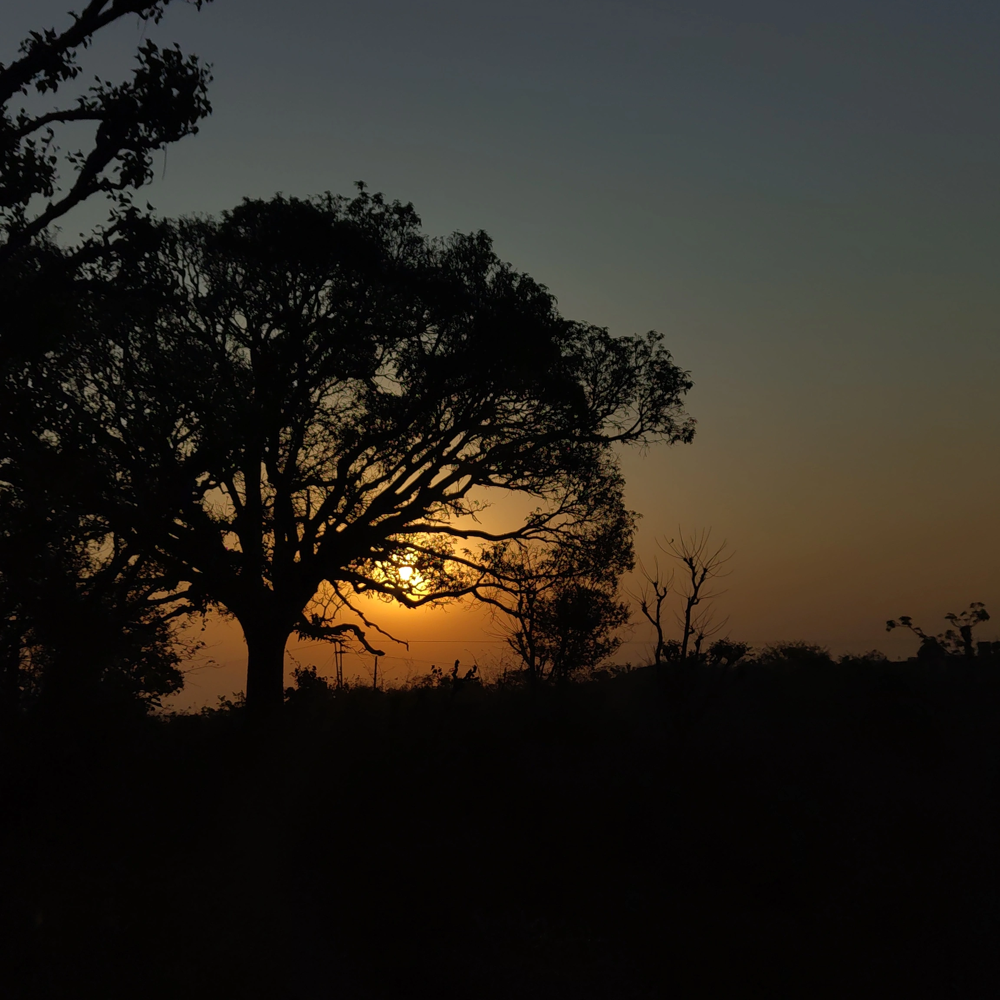
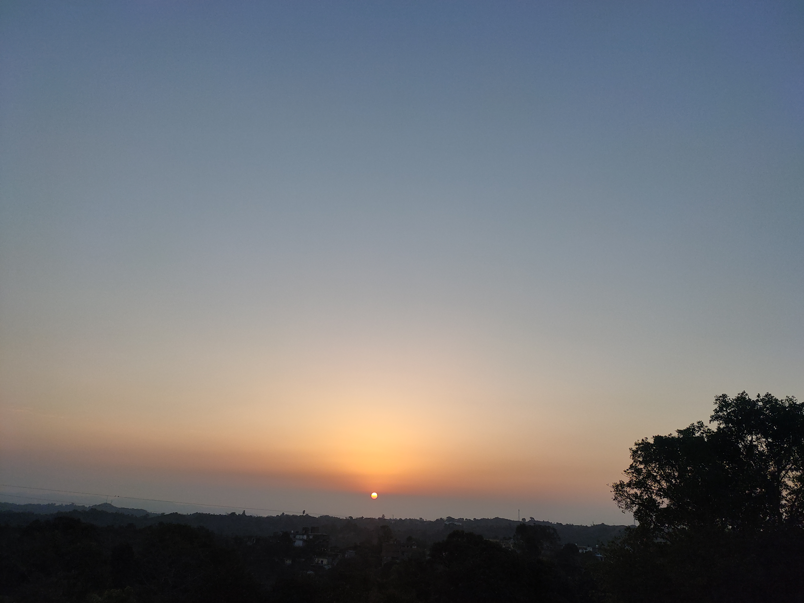

Weekly notes, photographs, restaurant reviews, and whatever else I feel like.
PhotographsMostly the same horizon, mostly at different hours
Almost all of these were taken within a few kilometres of where I live. Phone camera, no editing worth mentioning. The Dhauladhar does most of the work.
The Dhauladhar from my balcony. Monsoon light, which is the only time the clouds sit at that height.

Monkeys! Three of them, if you look. They sit like that for a long time.Winter. The towers and the cable are always in the way and I have stopped minding.The best one I have taken, and I did nothing to earn it. And people ask why go to Sukhna for sunrise.

The range as a silhouette, about fifteen minutes before it turns white.The water tower. Every neighbourhood here has one and they all look like this at seven.

Sun behind the tree on the day it was cut down.

Haze season. The sun goes down as a flat orange disc you can look straight at.